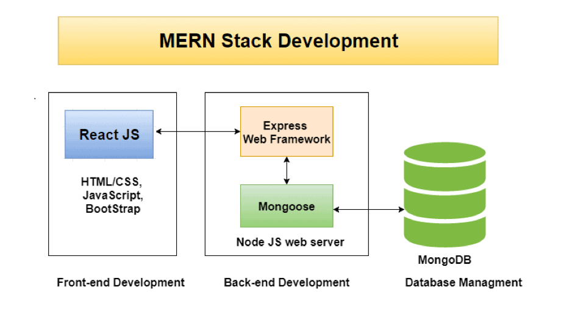

How does the MERN stack work?
In our first article of this series we looked at what the MERN stack is and the technologies that it is composed of. This second installment aims to shed light on how the MERN stack works – in other words, how the languages forming the MERN or the MEAN stack work together to create complex, powerful and above all impressive applications.
Like with a web application, let’s cut the MERN stack into two blocks: a back-end and a front-end.
Below is a diagram that will help you visualize how we distinguish the two blocks that form the MERN stack, with the front-end on the left and the back-end on the right.
Finally on the right, you’ll see the MongoDB database, which stores the data used in the application or software.
Developing the back-end with the MERN stack
MongoDB, Node.js and Express are dedicated to developing the back-end of web applications. This corresponds to database management, scripts, html documents, HTTP requests, etc.
With the MERN stack, the developers create URLs, such as application / users / create. On these URLs, they then create, read and modify the data that is stored and retrieved in the MongoDB database.
These URLs represent functions, with HTTP calls as the originators. The data is sent via the requests and the server in return will be responsible for modifying the database and sending everything back in JSON format (a format that is very practical because it is readable by JavaScript, the language used by all the technologies making up the MERN stack).
At this point, it’s time to start discussing the second block of the MERN stack: the front-end.
Developing the front-end with the MERN stack
React’s role is to execute HTTP requests. With React, developers make Ajax calls. This allows them to set up dynamic data downloads without the need for reloading the page. As a result, the web application is made to be much faster than average.
Ajax is really interesting because it acts in an invisible way. The user has the impression that the data displayed has always been present, whereas thanks to Ajax, it has just been downloaded. When, for example, you write a comment at the bottom of an article on a site and the site does not reload, it’s thanks to Ajax.
If you have IT development needs and you want to have an idea of our prices or team building methods for offshore developers that we implement, contact us – we will be happy to discuss your projects with you.